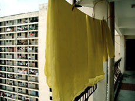

|
BLOCK B
Chris Chong Chan Fui | Malaysia/Kanada 2008 | 20 Min.
Material: 35mm
Format: 35mm
Origina language: Tamil
Script: Toni Kasim
Camera: Y.H. Cheong
Sound: Yasuhiro Morinaga
Editing: Lee Chatametikool
With P.S. Bama, Shanthini Venugopal, Lalitha Katragadda
Production: Chris Chong Chan Fui
Print/Sales: The Canadian Filmmakers Distribution
A building becomes a living painting, framing the lives of an expatriate Indian community in Malaysia in the area of Brickfields (Kuala Lumpur). It is a major transportation hub, but also an area of red-light prostitution, Indian cafés, temples, churches and mosques alike. The contradictory mélange of sounds mimic the disparate voices that comprise the country's own religious complexities and insecurities.
The building was a direct reflection of the carelessness of those who design and construct so-called living spaces that are more like holding cells. It becomes the duty of the residents to create warmth. As we look at the building without ist residents, it is nothing but a shell, resembling a penitentiary rather than a home. So my questions were: "What determines a home? How do the inhabitants, who are expatriates and floating between two countries, define their own sense of home? – Chris Chong Chan Fui
Chris Chong Chan Fui, born in Kota Kinabalu, Sabah, Borneo Malaysia, lives and works as director and media artist in Canada and Malaysia. 2007 he founded "Tanjung Aru Pictures", a production company that focuses on experimental films and documentaries. 2009 he presented his first feature length film at the renowned Quinzaine des Réalisateurs at the Cannes Film Festival. Currently he is preparing his second feature film, The Tour.
Films: Crash Skid Love 1998 | Minus 2000 | Notebook on Lightning Bolts and Turntables 2000 | Music might have deceived us 2000 | Let me start by saying 2001 | Tuesday be my friend 2006 | Kolam 2007 (UNDERDOX 04) | Block B 2008 | Karaoke 2009
back
|